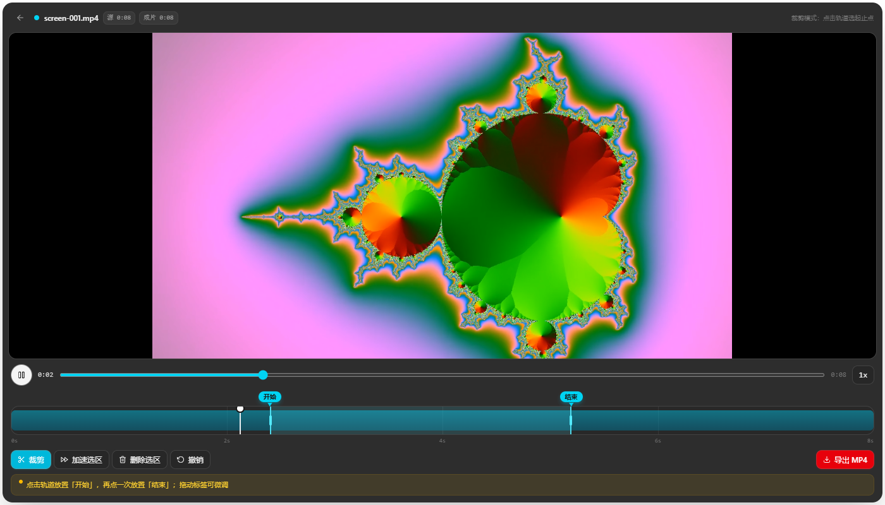
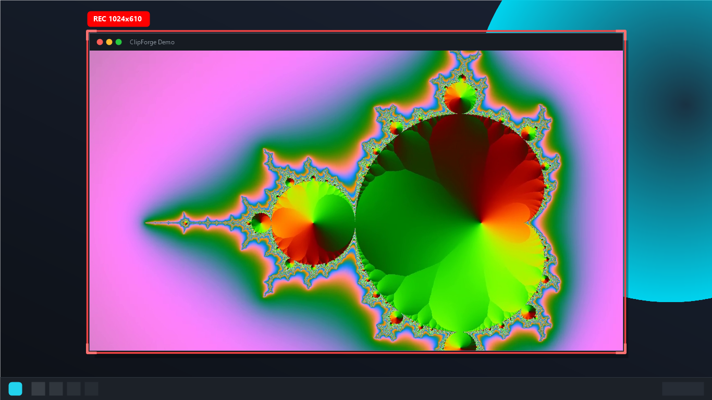

轻量 Windows 录屏与视频剪辑工具 —— 从录制到成片，一个应用搞定
Windows 10 / 11 · 64 位 · 4 GB 内存起步，8 GB 更流畅 · 自动选择最快下载线路


录制、剪辑、管理，全流程覆盖
ClipForge 没有账号系统、没有广告、没有遥测。录制内容只保存在你自己的电脑上，核心功能完全离线。详见 隐私政策。
English — ClipForge is a lightweight Windows screen recorder with a built-in video editor: capture fullscreen, region or a single app window with mixed system audio & microphone, then trim, speed up and export MP4 — all in one app. Free, no ads, no account, fully offline. Learn more on GitHub.